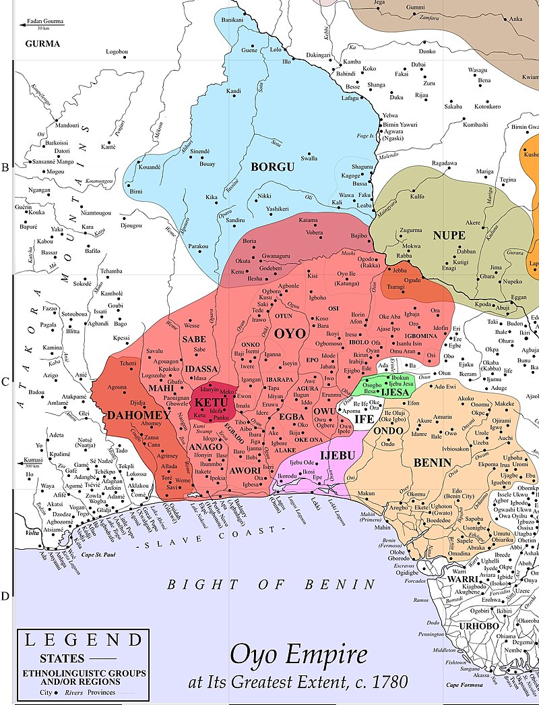
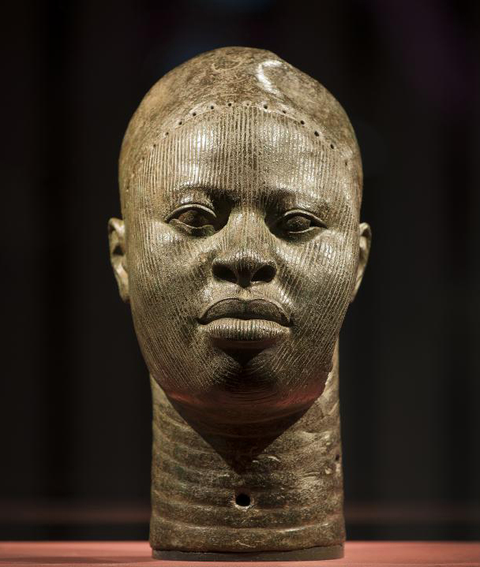

INTRODUCTION

The Oyo Empire, situated in present-day southwestern Nigeria, emerged as a dominant force in West Africa
during the 17th and 18th centuries. Founded by the Yoruba people, the empire was centered around its
capital, Oyo-Ile (also known as Old Oyo), and later Oyo-Igboho. The empire's rise to prominence was
facilitated by its strategic location along trade routes linking the coast with the interior, as well as its
control over valuable natural resources such as palm oil and slaves.
Led by powerful warrior-kings known as the Alaafins, the Oyo Empire expanded its influence through a
combination of military conquests, diplomacy, and alliances. The Alaafins wielded considerable authority,
supported by a complex system of government that included a council of chiefs and officials responsible for
administering the empire's vast territories. Oyo's military prowess and administrative efficiency enabled it
to establish hegemony over neighboring states and to become one of the largest and most centralized empires
in West Africa during its peak.
YORUBA SCULPTURES: THE BRONZE HEADS

The art of the Yoruba people, one of the largest ethnic groups in West Africa, is renowned for its
diversity, complexity, and cultural significance. Among their many artistic traditions, the brass heads
stand out as iconic examples of Yoruba craftsmanship and spiritual expression. These brass heads, often
referred to as "Ile-Ife heads," are believed to date back to the ancient city of Ife, the spiritual and
cultural heartland of the Yoruba people, and are considered masterpieces of African art.
The brass heads of the Yoruba are characterized by their naturalistic style, intricate detailing, and serene
expressions, reflecting the Yoruba people's reverence for the human form and their spiritual beliefs. These
heads were created using the lost-wax casting technique, a complex process that allowed Yoruba artisans to
achieve remarkable precision and realism in their sculptures. The brass heads were not merely decorative
objects but were imbued with profound spiritual significance, often representing deities, ancestral figures,
or royal lineage.
In Yoruba culture, these brass heads served various ceremonial and religious functions, including rituals
honoring ancestors, ceremonies celebrating royal succession, and offerings to gods and spirits. They were
believed to embody the spiritual essence of the individuals they depicted, serving as conduits between the
earthly realm and the divine. Today, Yoruba brass heads are celebrated as masterpieces of African art,
admired for their technical skill, aesthetic beauty, and cultural significance, and they continue to inspire
artists and scholars around the world.

Pages:
2
3